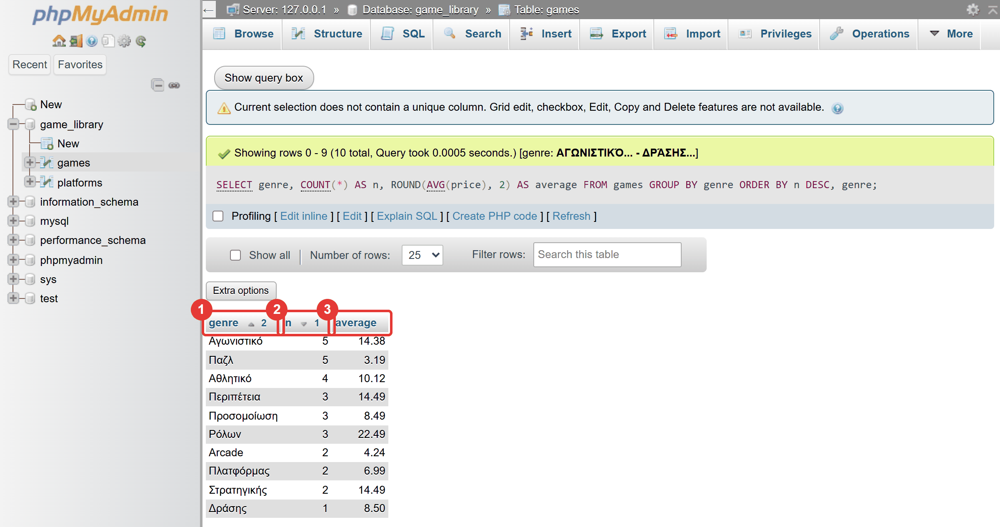
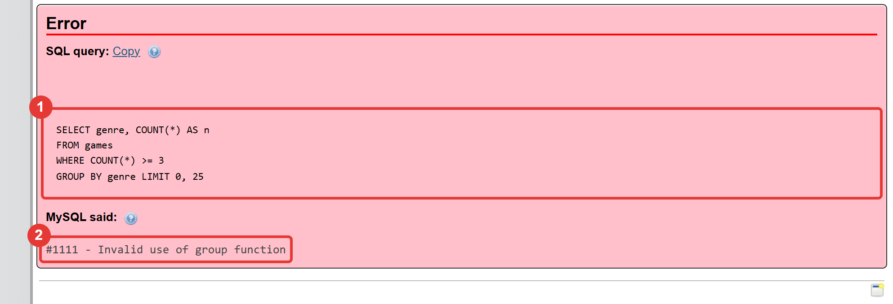

Μάθημα 10: Συγκεντρωτικά αποτελέσματα¶
Βάση δεδομένων και Python: πόσα, πόσο, πόσο κατά μέσο όρο: COUNT, SUM, AVG, MIN, MAX, GROUP BY, HAVING, και αναφορές στην Python
Διάρκεια: 2 κύκλοι × περίπου 45′ εργασία (2 διδακτικές ώρες)
Φύλλο εργασίας
Αυτή η σελίδα εξηγεί τις έννοιες. Οι ασκήσεις και οι οδηγίες για κάθε κύκλο βρίσκονται στο Φύλλο εργασίας 10. Δούλεψε με τις δύο σελίδες ανοιχτές.
Αρχεία εργαστηρίου¶
| Αρχείο | Κύκλος |
|---|---|
| 01-start-state.sql | πριν αρχίσεις |
| 02-aggregates.sql | 1 |
| 03-group-by.sql | 1 |
| 04-totals.py | 2 |
| 05-report.py | 2 |
Η αποστολή¶
Μέχρι τώρα κάθε αποτέλεσμα ήταν γραμμές της βιβλιοθήκης. Συχνά όμως θέλεις να ρωτήσεις για το σύνολο: «Πόσα παιχνίδια έχουμε;», «Πόσο κοστίζουν όλα μαζί;», «Ποιο είδος έχει τη μεγαλύτερη μέση τιμή;», «Πόσα παιχνίδια προστέθηκαν κάθε μήνα;». Αυτά λέγονται συγκεντρωτικά αποτελέσματα (aggregates): πολλές γραμμές γίνονται ένας αριθμός ή ένας μικρός πίνακας. Με το χέρι θα έκανες ώρες. Η βάση τα υπολογίζει σε χιλιοστά του δευτερολέπτου, και ο κώδικας που θα γράψεις δουλεύει το ίδιο με 30 παιχνίδια και με 3 εκατομμύρια.
Για να έχουν νόημα οι ομάδες, η βιβλιοθήκη μεγάλωσε: έχει πια 30 παιχνίδια.
Στο τέλος θα μπορείς¶
- να υπολογίζεις πλήθος, άθροισμα, μέσο όρο, ελάχιστο και μέγιστο με
COUNT,SUM,AVG,MIN,MAX. - να εξηγείς τη διαφορά του
COUNT(*)από τοCOUNT(στήλη)και τι δίνουν οι συναρτήσεις όταν δεν υπάρχουν γραμμές. - να χωρίζεις τις γραμμές σε ομάδες με
GROUP BYκαι να υπολογίζεις ένα αποτέλεσμα για κάθε ομάδα. - να φιλτράρεις γραμμές με
WHEREκαι ομάδες μεHAVING, και να ξέρεις γιατί δεν είναι το ίδιο. - να γράφεις τις φράσεις μιας
SELECTμε τη σωστή σειρά, από τοSELECTμέχρι τοLIMIT. - να παίρνεις ένα συγκεντρωτικό αποτέλεσμα στην Python (
fetchone, ανάλυση πλειάδας,Decimal,None). - να γράφεις μια αναφορά με βρόχο και «μπάρες» από χαρακτήρες.
Πριν αρχίσεις¶
- Ξεκίνα τη MySQL και τον Apache από το XAMPP Control Panel.
- Φτιάξε έναν φάκελο
10-aggregatesμέσα στον φάκελο των μαθημάτων και κατέβασε εκεί τα πέντε αρχεία του πίνακα. Κράτησε ακριβώς τα ονόματα. Άνοιξε τον φάκελο στο VS Code και άνοιξε τερματικό. - Φέρε τη βάση στην κατάσταση εκκίνησης: στο phpMyAdmin επίλεξε τη βάση
game_library, άνοιξε την καρτέλα Import, διάλεξε το01-start-state.sqlκαι πάτα Import. - Έλεγξε στην καρτέλα Browse ότι ο
gamesέχει 30 γραμμές και οplatforms5.
Το αρχείο εκκίνησης σβήνει τα δεδομένα σου
Το 01-start-state.sql σβήνει τους πίνακες games, platforms και players και τους φτιάχνει από την
αρχή. Ο games έχει τα 14 παιχνίδια του Μαθήματος 9 και 16 νέα, με τους περιορισμούς και τις στήλες description
και added_on των Μαθημάτων 8 και 9. Αν σήμερα χαλάσεις τα δεδομένα, τρέξε το ξανά.
Ο κύκλος εργασίας
Πρόβλεψη → εκτέλεση → σύγκριση → εξήγηση. Σήμερα πρόβλεψε πόσες γραμμές θα έχει το αποτέλεσμα (μία για όλον τον πίνακα, ή μία για κάθε ομάδα) και τι αριθμό θα δείξει.
Κύκλος 1 — Συγκεντρωτικά αποτελέσματα στη SQL¶
Σε αυτόν τον κύκλο μαθαίνεις τις συναρτήσεις συγκέντρωσης, τις ομάδες (GROUP BY) και το φίλτρο των ομάδων
(HAVING).
1.1 Οι συναρτήσεις συγκέντρωσης¶
| Συνάρτηση | Τι δίνει | Παράδειγμα |
|---|---|---|
COUNT(*) |
το πλήθος των γραμμών | COUNT(*) → 30 |
SUM(στήλη) |
το άθροισμα των τιμών | SUM(price) → 324.66 |
AVG(στήλη) |
ο μέσος όρος | AVG(price) → 10.822000 |
MIN(στήλη) |
η ελάχιστη τιμή | MIN(price) → 1.99 |
MAX(στήλη) |
η μέγιστη τιμή | MAX(price) → 24.99 |
Καθεμία δίνει μία τιμή για όλον τον πίνακα, άρα το αποτέλεσμα έχει μία γραμμή:
- Δίνεις ψευδώνυμα με
AS(COUNT(*) AS games), όπως στο Μάθημα 2. - Η
AVGδίνει πολλά δεκαδικά (10.822000). Τη στρογγυλεύεις μεROUND(AVG(price), 2). - Το
WHEREδουλεύει πριν από τον υπολογισμό:SELECT COUNT(*), AVG(price) FROM games WHERE genre = 'Αγωνιστικό'υπολογίζει μόνο για τα αγωνιστικά. - Οι
MINκαιMAXδουλεύουν και σε ημερομηνίες (η πρώτη και η τελευταία προσθήκη) και σε κείμενα (αλφαβητική σειρά).
1.2 Το NULL και το «καμία γραμμή»¶
- Το
COUNT(*)μετρά γραμμές. ΤοCOUNT(στήλη)μετρά μόνο τις γραμμές όπου η στήλη δεν είναιNULL. Η στήληdescriptionείναιNULLσχεδόν παντού:COUNT(*)δίνει30,COUNT(description)δίνει1. - Το
COUNT(DISTINCT στήλη)μετρά τις διαφορετικές τιμές:COUNT(DISTINCT genre)δίνει10. - Οι
SUM,AVG,MINκαιMAXαγνοούν ταNULL. - Αν δεν υπάρχει καμία γραμμή που να ταιριάζει, το
COUNT(*)δίνει0, και οιSUM,AVG,MIN,MAXδίνουνNULL(όχι0). Στην Python τοNULLθα γίνειNone.
1.3 Η συγκέντρωση δίνει τιμή, όχι γραμμή¶
Η MAX(price) λέει ποια είναι η μεγαλύτερη τιμή, όχι σε ποιο παιχνίδι ανήκει. Αν γράψεις:
δεν παίρνεις σφάλμα. Παίρνεις την τιμή 24.99 μαζί με έναν τίτλο που δεν είναι του ακριβότερου παιχνιδιού (το XAMPP
δεν διαμαρτύρεται). Για να βρεις ποιο είναι το ακριβότερο, χρησιμοποιείς ORDER BY και LIMIT (Μάθημα 4):
Στάδιο 1 — Οι συναρτήσεις συγκέντρωσης¶
Άνοιξε το 02-aggregates.sql. Συμπλήρωσε τα πέντε κενά (____) και τρέξε κάθε εντολή ξεχωριστά στην καρτέλα
SQL. Πρώτα πρόβλεψε το αποτέλεσμα.
-- Στάδιο 1 — Συγκεντρωτικά αποτελέσματα: COUNT, SUM, AVG, MIN, MAX.
--
-- Πριν αρχίσεις: τρέξε το 01-start-state.sql (καρτέλα Import), ώστε ο games να έχει 30 γραμμές.
--
-- Πώς το τρέχεις:
-- 1. Συμπλήρωσε τα κενά (____) σε έναν επεξεργαστή κειμένου.
-- 2. Τρέξε κάθε εντολή ΞΕΧΩΡΙΣΤΑ στην καρτέλα SQL της βάσης game_library.
-- 3. ΠΡΩΤΑ πρόβλεψε το αποτέλεσμα. Κάθε εντολή δίνει ΜΙΑ γραμμή: ένα αποτέλεσμα για όλον τον πίνακα.
-- Ερώτημα 1 (έτοιμο): πόσα παιχνίδια έχει η βιβλιοθήκη;
SELECT COUNT(*)
FROM games;
-- Ερώτημα 2: πόσο κοστίζουν όλα μαζί (άθροισμα) και ποια είναι η μέση τιμή;
SELECT ____(price), AVG(price)
FROM games;
-- Ερώτημα 3: η φθηνότερη τιμή και η ακριβότερη τιμή
SELECT ____(price), MAX(price)
FROM games;
-- Ερώτημα 4: ψευδώνυμα (AS) και στρογγυλοποίηση της μέσης τιμής σε δύο δεκαδικά
SELECT COUNT(*) AS games, ROUND(AVG(price), ____) AS average
FROM games;
-- Ερώτημα 5 (έτοιμο): συγκεντρωτικά ΜΟΝΟ για τα αγωνιστικά. Το WHERE φιλτράρει τις γραμμές ΠΡΙΝ τον υπολογισμό
SELECT COUNT(*), AVG(price)
FROM games
WHERE genre = 'Αγωνιστικό';
-- Ερώτημα 6: το παλαιότερο και το νεότερο έτος κυκλοφορίας
SELECT MIN(release_year), ____(release_year)
FROM games;
-- Ερώτημα 7: πόσα ΔΙΑΦΟΡΕΤΙΚΑ είδη υπάρχουν; (το DISTINCT του Μαθήματος 2, μέσα στο COUNT)
SELECT COUNT(____ genre)
FROM games;
-- Ερώτημα 8 (έτοιμο): το COUNT(*) μετρά ΓΡΑΜΜΕΣ, το COUNT(στήλη) μετρά μόνο τις τιμές που ΔΕΝ είναι NULL
-- (θυμήσου ότι η περιγραφή description είναι NULL στα περισσότερα παιχνίδια). Πρόβλεψε τα δύο αποτελέσματα
SELECT COUNT(*), COUNT(description)
FROM games;
-- Ερώτημα 9 (έτοιμο): τι δίνουν όταν δεν υπάρχει ΚΑΜΙΑ γραμμή που να ταιριάζει;
SELECT COUNT(*), SUM(price), AVG(price)
FROM games
WHERE genre = 'Δεν υπάρχει';
-- Ερώτημα 10 (έτοιμο): η MAX δίνει μια ΤΙΜΗ, όχι μια ΓΡΑΜΜΗ. Για να βρεις ποιο παιχνίδι είναι το ακριβότερο,
-- χρησιμοποίησε ORDER BY και LIMIT (Μάθημα 4)
SELECT title, price
FROM games
ORDER BY price DESC
LIMIT 1;
1.4 GROUP BY: ένα αποτέλεσμα για κάθε ομάδα¶
Συχνά δεν θέλεις ένα αποτέλεσμα για όλον τον πίνακα, αλλά ένα για κάθε είδος, κάθε χρονιά, κάθε μήνα. Το
GROUP BY χωρίζει τις γραμμές σε ομάδες με την ίδια τιμή στη στήλη και υπολογίζει τις συγκεντρώσεις χωριστά για
κάθε ομάδα:

Το αποτέλεσμα έχει μία γραμμή για κάθε είδος (10 γραμμές), και σε κάθε γραμμή το πλήθος και η μέση τιμή των παιχνιδιών εκείνου του είδους. Τι πρέπει να ξέρεις:
- Κάθε στήλη στο
SELECTείναι είτε στοGROUP BYείτε μέσα σε συνάρτηση συγκέντρωσης. (Εδώ: τοgenreείναι στοGROUP BY, και οιCOUNTκαιAVGείναι συγκεντρώσεις.) - Η σειρά των ομάδων δεν είναι εγγυημένη. Αν τη θέλεις, γράφεις
ORDER BY(μπορείς να ταξινομήσεις και με το ψευδώνυμο μιας συγκέντρωσης:ORDER BY n DESC). - Μπορείς να ομαδοποιήσεις και με υπολογισμό:
GROUP BY release_year,GROUP BY MONTH(added_on)(ηMONTHείναι από το Μάθημα 9).
Η τρύπα του XAMPP: στήλη εκτός GROUP BY
Αν στο SELECT βάλεις μια στήλη που δεν είναι στο GROUP BY και δεν είναι συγκέντρωση (π.χ.
SELECT genre, title, COUNT(*) FROM games GROUP BY genre), μια αυστηρή βάση θα δώσει σφάλμα. Το XAMPP δεν
δίνει σφάλμα: δείχνει τον τίτλο μιας τυχαίας γραμμής της ομάδας. Το αποτέλεσμα φαίνεται σωστό και δεν
είναι. Βάζεις στο SELECT μόνο στήλες του GROUP BY και συγκεντρώσεις.
1.5 WHERE και HAVING¶
Και τα δύο φιλτράρουν, αλλά σε διαφορετικό σημείο:
WHERE |
HAVING |
|
|---|---|---|
| Τι φιλτράρει | γραμμές | ομάδες |
| Πότε δουλεύει | πριν από τις ομάδες | μετά τον υπολογισμό των ομάδων |
Μπορεί να χρησιμοποιήσει COUNT, AVG, …; |
Όχι (σφάλμα #1111) |
Ναι |
Αν βάλεις μια συγκέντρωση στο WHERE, το phpMyAdmin δείχνει το σφάλμα:

SELECT genre, COUNT(*) AS n, ROUND(AVG(price), 2) AS average
FROM games
WHERE release_year >= 2022 -- πρώτα: κράτα μόνο τα παιχνίδια του 2022 και μετά
GROUP BY genre -- μετά: φτιάξε ομάδες ανά είδος
HAVING COUNT(*) >= 2 -- μετά: κράτα τις ομάδες με τουλάχιστον 2 παιχνίδια
ORDER BY average DESC; -- τέλος: ταξινόμησε
Η σειρά που γράφεις τις φράσεις είναι πάντα:
Και η σειρά που εκτελούνται είναι: FROM → WHERE → GROUP BY → HAVING → SELECT → ORDER BY → LIMIT.
Γι' αυτό το WHERE δεν βλέπει τις συγκεντρώσεις: όταν δουλεύει, οι ομάδες δεν έχουν φτιαχτεί ακόμη. Ένα φίλτρο που
αφορά γραμμές (π.χ. release_year >= 2022) πηγαίνει πάντα στο WHERE, όχι στο HAVING.
Στάδιο 2 — Ομάδες¶
Άνοιξε το 03-group-by.sql. Συμπλήρωσε τα πέντε κενά και τρέξε κάθε εντολή ξεχωριστά. Πρώτα πρόβλεψε πόσες γραμμές
θα έχει το αποτέλεσμα. Το ερώτημα 5 δίνει σφάλμα επίτηδες, και το 9 έχει την παγίδα της ενότητας 1.4.
-- Στάδιο 2 — Ομάδες: GROUP BY και HAVING.
--
-- Πριν αρχίσεις: ο games πρέπει να έχει 30 γραμμές (01-start-state.sql).
--
-- Πώς το τρέχεις:
-- 1. Συμπλήρωσε τα κενά (____) σε έναν επεξεργαστή κειμένου.
-- 2. Τρέξε κάθε εντολή ΞΕΧΩΡΙΣΤΑ στην καρτέλα SQL της βάσης game_library.
-- 3. ΠΡΩΤΑ πρόβλεψε πόσες γραμμές θα έχει το αποτέλεσμα: ΜΙΑ γραμμή για κάθε ΟΜΑΔΑ.
-- Ερώτημα 1: πόσα παιχνίδια έχει κάθε είδος;
SELECT genre, COUNT(*) AS n
FROM games
GROUP BY ____;
-- Ερώτημα 2: ταξινόμησε: πρώτα τα είδη με τα περισσότερα παιχνίδια, και σε ισοβαθμία αλφαβητικά
SELECT genre, COUNT(*) AS n
FROM games
GROUP BY genre
ORDER BY n ____, genre;
-- Ερώτημα 3 (έτοιμο): μέση τιμή και ακριβότερη τιμή ανά είδος
SELECT genre, ROUND(AVG(price), 2) AS average, MAX(price) AS dearest
FROM games
GROUP BY genre
ORDER BY average DESC;
-- Ερώτημα 4: μόνο τα είδη με ΤΟΥΛΑΧΙΣΤΟΝ 3 παιχνίδια. Το HAVING φιλτράρει ΟΜΑΔΕΣ, αφού υπολογιστούν
SELECT genre, COUNT(*) AS n
FROM games
GROUP BY genre
____ COUNT(*) >= 3;
-- Ερώτημα 5 (έτοιμο): ΘΑ ΔΩΣΕΙ ΣΦΑΛΜΑ. Το WHERE φιλτράρει γραμμές ΠΡΙΝ τις ομάδες, άρα δεν μπορεί να δει το COUNT(*)
SELECT genre, COUNT(*) AS n
FROM games
WHERE COUNT(*) >= 3
GROUP BY genre;
-- Ερώτημα 6: και τα δύο μαζί. ΠΡΩΤΑ το WHERE (μόνο παιχνίδια του 2022 και μετά), ΜΕΤΑ οι ομάδες με τουλάχιστον 2 παιχνίδια
SELECT genre, COUNT(*) AS n, ROUND(AVG(price), 2) AS average
FROM games
WHERE release_year ____ 2022
GROUP BY genre
HAVING COUNT(*) >= 2
ORDER BY average DESC;
-- Ερώτημα 7 (έτοιμο): ομάδες ανά χρονιά κυκλοφορίας
SELECT release_year, COUNT(*) AS n
FROM games
GROUP BY release_year
ORDER BY release_year;
-- Ερώτημα 8: ομάδες ανά ΜΗΝΑ προσθήκης (η MONTH είναι από το Μάθημα 9)
SELECT MONTH(added_on) AS month, COUNT(*) AS n
FROM games
GROUP BY ____(added_on)
ORDER BY month;
-- Ερώτημα 9 (έτοιμο): ΠΡΟΣΟΧΗ! Μια στήλη (title) που ΔΕΝ είναι στο GROUP BY και δεν είναι συγκέντρωση.
-- Δεν δίνει σφάλμα. Ποιον τίτλο δείχνει για κάθε είδος;
SELECT genre, title, COUNT(*) AS n
FROM games
GROUP BY genre;
Συνέχισε στο Φύλλο εργασίας, Κύκλος 1.
Κύκλος 2 — Στατιστικά στην Python¶
Σε αυτόν τον κύκλο παίρνεις συγκεντρωτικά αποτελέσματα στην Python και φτιάχνεις μια αναφορά με «μπάρες».
2.1 Μία γραμμή αποτελέσματος¶
Ένα ερώτημα χωρίς GROUP BY δίνει μία γραμμή. Την παίρνεις με fetchone() και την αναλύεις σε μεταβλητές, με
τη σειρά των στηλών:
cursor.execute("SELECT COUNT(*), SUM(price), AVG(price) FROM games")
count, total, average = cursor.fetchone()
print(f"Παιχνίδια: {count}, μέση τιμή: {average:.2f} €")
Οι τύποι που επιστρέφει ο οδηγός:
| Συνάρτηση | Τύπος στην Python |
|---|---|
COUNT(*) |
int |
SUM(price), AVG(price), MIN(price), MAX(price) |
Decimal (όπως η στήλη price) |
AVG(release_year) |
Decimal (π.χ. 2022.4667) |
MIN(added_on), MAX(added_on) |
date |
Η μορφή :.2f εμφανίζει ένα Decimal με δύο δεκαδικά (το 10.822000 γίνεται 10.82).
2.2 Το None¶
Όταν δεν υπάρχει καμία γραμμή που να ταιριάζει, οι SUM, AVG, MIN, MAX δίνουν NULL, δηλαδή None στην
Python. Αν δοκιμάσεις να το μορφοποιήσεις (f"{average:.2f}" με average = None), παίρνεις TypeError: unsupported
format string passed to NoneType.__format__. Το πρόγραμμά σου πρέπει να ελέγχει:
Στάδιο 3 — Μία γραμμή από την Python¶
Άνοιξε το 04-totals.py. Συμπλήρωσε τα πέντε κενά και τρέξε το. Δοκίμασε ένα είδος που υπάρχει (π.χ. Αθλητικό) και
ένα που δεν υπάρχει (π.χ. Δεν υπάρχει).
"""Στάδιο 3 — Συγκεντρωτικά αποτελέσματα από την Python: μια γραμμή αποτελέσματος.
Οι συναρτήσεις COUNT, SUM, AVG, MIN, MAX δίνουν ΜΙΑ γραμμή. Την παίρνεις με fetchone() και την αναλύεις σε
μεταβλητές. Η SUM και η AVG δίνουν Decimal, και αν δεν υπάρχει καμία γραμμή η AVG δίνει NULL, δηλαδή None.
Συμπλήρωσε τα πέντε κενά (____).
"""
import mysql.connector
connection = mysql.connector.connect(host="localhost", user="root", password="", database="game_library")
cursor = connection.cursor()
# --- 1. Τα συνολικά στοιχεία της βιβλιοθήκης -------------------------------------------------------------------
cursor.execute("SELECT COUNT(*), SUM(price), AVG(price), MIN(price), MAX(price) FROM games")
# TODO 1: το αποτέλεσμα είναι ΜΙΑ γραμμή: τη φέρνει η fetchone()
row = cursor.____()
# TODO 2: ανάλυση της πλειάδας σε πέντε μεταβλητές, με τη σειρά των στηλών
count, total, average, cheapest, dearest = ____
print(f"Παιχνίδια: {count}")
print(f"Συνολική αξία: {total:.2f} €")
print(f"Μέση τιμή: {average:.2f} €")
print(f"Φθηνότερο: {cheapest:.2f} € | Ακριβότερο: {dearest:.2f} €")
print()
# --- 2. Τα στοιχεία ενός είδους, της επιλογής του χρήστη ---------------------------------------------------------
genre = input("Είδος: ")
cursor.execute("SELECT COUNT(*), AVG(price) FROM games WHERE genre = %s", (genre,))
count, average = cursor.fetchone()
# TODO 3: αν δεν υπάρχει κανένα παιχνίδι, η AVG δίνει NULL, δηλαδή None στην Python
if average is ____:
print(f"Κανένα παιχνίδι στο είδος «{genre}».")
else:
# TODO 4: η μέση τιμή είναι Decimal με πολλά δεκαδικά· η μορφή .2f την εμφανίζει με δύο
print(f"Το είδος «{genre}» έχει {count} παιχνίδια, με μέση τιμή {average:____} €.")
print()
# --- 3. Ποιο παιχνίδι είναι το ακριβότερο; Η MAX δίνει τιμή, όχι γραμμή ----------------------------------------------
# TODO 5: ταξινόμηση από την ακριβότερη τιμή προς τη φθηνότερη
cursor.execute("SELECT title, price FROM games ORDER BY price ____ LIMIT 1")
title, price = cursor.fetchone()
print(f"Το ακριβότερο παιχνίδι είναι το «{title}» ({price:.2f} €).")
cursor.close()
connection.close()
2.3 Ομάδες σε βρόχο¶
Ένα ερώτημα με GROUP BY δίνει πολλές γραμμές. Τις παίρνεις με fetchall() και τις διατρέχεις με for, αναλύοντας
κάθε γραμμή:
cursor.execute(
"SELECT genre, COUNT(*), AVG(price) FROM games GROUP BY genre HAVING COUNT(*) >= %s ORDER BY COUNT(*) DESC, genre",
(min_count,),
)
rows = cursor.fetchall()
for genre, n, average in rows:
print(genre, n, average)
- Το όριο του
HAVINGδίνεται ως παράμετρος%s, όπως όλα τα στοιχεία που έρχονται από τον χρήστη (Μάθημα 5). Τοmin_countέρχεται από τηνask_intτου Μαθήματος 8, και είναι αριθμός. - Αν καμία ομάδα δεν ικανοποιεί το
HAVING, ηrowsείναι κενή λίστα: το πρόγραμμα το ελέγχει (if len(rows) == 0).
2.4 «Μπάρες» από χαρακτήρες¶
Ένα κείμενο μπορεί να επαναληφθεί με το *: "█" * 3 δίνει "███". Έτσι φτιάχνεις ένα απλό γράφημα, με μία
«μπάρα» για κάθε ομάδα:
Οι μορφές :<12, :>6.2f είναι αυτές του Μαθήματος 3: πλάτος στήλης και στοίχιση.
2.5 Η αναφορά από συναρτήσεις¶
Στο Στάδιο 4 η αναφορά οργανώνεται όπως η εφαρμογή του Μαθήματος 7: μία συνάρτηση για κάθε ενότητα
(show_totals, show_by_genre, show_by_year), που παίρνει τη σύνδεση, και μια main που τις καλεί με τη σειρά.
Η ask_int του Μαθήματος 8 ρωτά το ελάχιστο πλήθος για το HAVING.
Στάδιο 4 — Η αναφορά της βιβλιοθήκης¶
Άνοιξε το 05-report.py. Συμπλήρωσε τα τέσσερα κενά και τρέξε το. Δοκίμασε ελάχιστο πλήθος 3, 5 και 10. Νέα
κομμάτια:
def show_by_genre(connection, min_count):
"""Εμφανίζει πόσα παιχνίδια και ποια μέση τιμή έχει κάθε είδος, για τα είδη με τουλάχιστον min_count παιχνίδια."""
cursor = connection.cursor()
# TODO 1: το HAVING φιλτράρει τις ΟΜΑΔΕΣ (το min_count δίνεται ως παράμετρος)
cursor.execute(
"SELECT genre, COUNT(*), AVG(price) FROM games GROUP BY genre "
"____ COUNT(*) >= %s ORDER BY COUNT(*) DESC, genre",
(min_count,),
)
rows = cursor.fetchall()
cursor.close()
print()
print(f"ΕΙΔΗ ΜΕ ΤΟΥΛΑΧΙΣΤΟΝ {min_count} ΠΑΙΧΝΙΔΙΑ")
if len(rows) == 0:
print("Κανένα είδος δεν έχει τόσα παιχνίδια.")
return
# TODO 2: κάθε στοιχείο της λίστας είναι μια γραμμή αποτελέσματος (genre, n, average)
for genre, n, average in ____:
# TODO 3: μια «μπάρα» από n τετράγωνα (ένα κείμενο επαναλαμβάνεται με το *)
bar = "█" * ____
print(f"{genre:<12} {bar:<6} {n:>2} {average:>6.2f} €")
def show_by_year(connection):
"""Εμφανίζει πόσα παιχνίδια κυκλοφόρησαν κάθε χρονιά."""
cursor = connection.cursor()
# TODO 4: ομάδες ανά χρονιά κυκλοφορίας: GROUP BY
cursor.execute("SELECT release_year, COUNT(*) FROM games ____ BY release_year ORDER BY release_year")
rows = cursor.fetchall()
cursor.close()
print()
print("ΠΑΙΧΝΙΔΙΑ ΑΝΑ ΧΡΟΝΙΑ ΚΥΚΛΟΦΟΡΙΑΣ")
for year, n in rows:
print(f"{year} {'█' * n:<7} {n}")
Και η main, που καλεί τις συναρτήσεις με τη σειρά:
def main():
"""Το κύριο πρόγραμμα: εμφανίζει την αναφορά της βιβλιοθήκης."""
connection = connect()
show_totals(connection)
print()
min_count = ask_int("Εμφάνιση ειδών με τουλάχιστον πόσα παιχνίδια; ", 1, 100)
show_by_genre(connection, min_count)
show_by_year(connection)
connection.close()
Συνέχισε στο Φύλλο εργασίας, Κύκλος 2.
Έλεγχος πριν ολοκληρώσεις¶
- □ Στο Στάδιο 1 είδες ότι το
COUNT(description)είναι πολύ μικρότερο από τοCOUNT(*), και ξέρεις γιατί. - □ Στο Στάδιο 2 είδες το σφάλμα
#1111του ερωτήματος 5 και ξέρεις γιατί τοWHEREδεν βλέπει τοCOUNT(*). - □ Στο ερώτημα 9 είδες ότι μια στήλη εκτός
GROUP BYδεν δίνει σφάλμα, και ξέρεις γιατί είναι επικίνδυνη. - □ Το πρόγραμμα του Σταδίου 3 δεν σταματά με
TypeErrorόταν δώσεις είδος που δεν υπάρχει. - □ Η αναφορά του Σταδίου 4 δείχνει «μπάρες» και τα αποτελέσματά της συμφωνούν με το phpMyAdmin.
- □ Όταν τελείωσες, σταμάτησες τον Apache και τη MySQL.
Για να θυμάσαι¶
COUNT,SUM,AVG,MIN,MAXδίνουν μία τιμή για όλες τις γραμμές (ή για κάθε ομάδα, αν υπάρχειGROUP BY).COUNT(*)μετρά γραμμές,COUNT(στήλη)μετρά τιμές που δεν είναιNULL,COUNT(DISTINCT στήλη)μετρά τις διαφορετικές. Χωρίς γραμμές:COUNT→0, οι υπόλοιπες →NULL(Noneστην Python).- Η συγκέντρωση δίνει τιμή, όχι γραμμή: το ακριβότερο παιχνίδι το βρίσκεις με
ORDER BY price DESC LIMIT 1. GROUP BYφτιάχνει ομάδες. ΣτοSELECTμπαίνουν μόνο στήλες τουGROUP BYκαι συγκεντρώσεις. Στο XAMPP μια άλλη στήλη δεν δίνει σφάλμα και δείχνει τυχαία τιμή.WHEREφιλτράρει γραμμές πριν από τις ομάδες (χωρίς συγκεντρώσεις).HAVINGφιλτράρει ομάδες μετά.- Σειρά γραφής:
SELECT … FROM … WHERE … GROUP BY … HAVING … ORDER BY … LIMIT …. - Python:
fetchone()για μία γραμμή και ανάλυση σε μεταβλητές,fetchall()καιforγια πολλές.SUM/AVGδίνουνDecimal,COUNTδίνειint, το «τίποτα» είναιNone(έλεγχος μεis None). "█" * nφτιάχνει μια «μπάρα» για ένα γράφημα με χαρακτήρες.
Λεξιλόγιο¶
συγκεντρωτικό αποτέλεσμα (aggregate), COUNT, SUM, AVG, MIN, MAX, GROUP BY,
ομάδα, HAVING, DISTINCT, ψευδώνυμο (alias), αναφορά (report).
Δική σου εκδοχή¶
Αν τελειώσεις νωρίτερα, δούλεψε με μία αλλαγή τη φορά και δοκίμαζε μετά από κάθε αλλαγή:
- Στην
show_by_genreπρόσθεσε μια στήλη με τη συνολική αξία κάθε είδους (SUM(price)). - Φτιάξε ερώτημα που δείχνει τα είδη με μέση τιμή μεγαλύτερη από 10 €. Πού μπαίνει το φίλτρο, στο
WHEREή στοHAVING; Γιατί; - Πρόκληση 1: τρέξε
SELECT title, MAX(price) FROM games;. Ποιος τίτλος βγαίνει; Ταιριάζει με το ακριβότερο παιχνίδι; Πώς θα έβρισκες το σωστό; - Πρόκληση 2: άλλαξε το
GROUP BY genreσεGROUP BY genre, release_year(και πρόσθεσε τοrelease_yearστοSELECT). Πόσες γραμμές περιμένεις; Δοκίμασε. Τι σημαίνει ότι ομαδοποιείς με δύο στήλες;